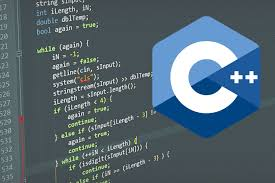

actividad 1

RESUMEN DE LAS DOS CLASES DE TECNOLOGIA
Como nos dice el profe los computadores hablan en lenguaje binario (101001) y por obvias razones diferente al lenguaje humano en este caso se necesita algo que ayude a traducir el lenguaje binario al del ser humano osea que el ser humano pueda darle ordenes al computador y que las entienda y que le permita al computador comunicarse con el usuario y asi los dos entiendan esta ayuda es mas conocida como un INTERMEDIARIO
EJEMPLOS DE INTERMEDIARIOS
DEV C++

Es un programa que te permite usar un lenguaje de programacion especializado en la comunicacion al computador por medio de SINTAXIS mas conocido como la manera de dar ordenes directas
ESTRUCTURA DE C++
LIBRERIAS
Es un grupo de instrucciones de un mismo tipo de cantidad cualquiera
FUNCIONES Y CONSTANTES
Es un espacio de cosas que usted necesita y nunca van a cambiar ni con el paso del tiempo y las constantes son numeros
MAIN O PRINCIPAL
Aqui comienzan las ordenes en esto es donde se dan todas las indicaciones para quel computador las aga perfectamente
VARIABLES
Eto es mas conocido como toda la informacion son "cajones" donde se puede guardar lo que sea y cuenta con sus diferentes partes
INT CHAR BOOLEAN STRING FLOAT